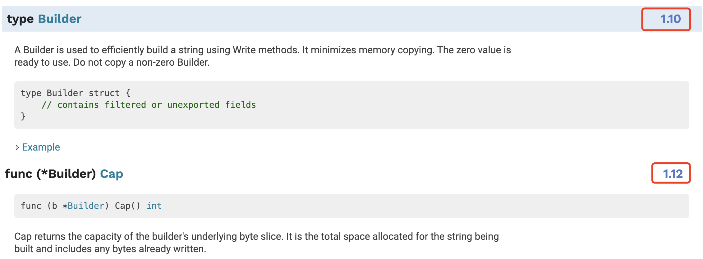
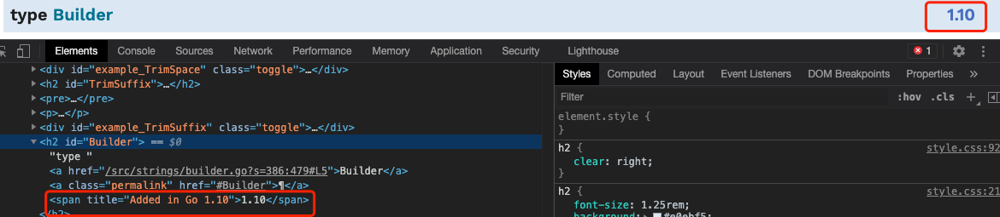
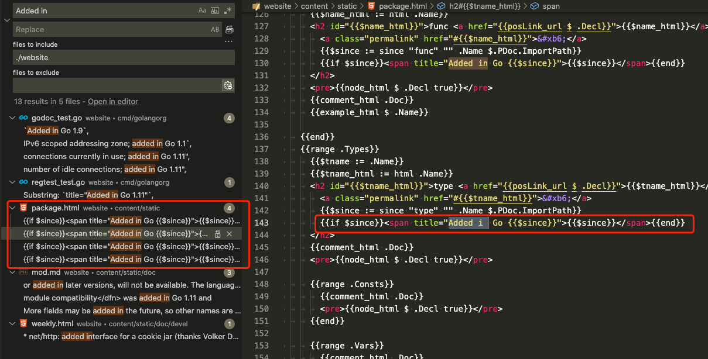
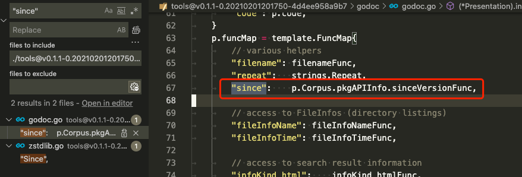
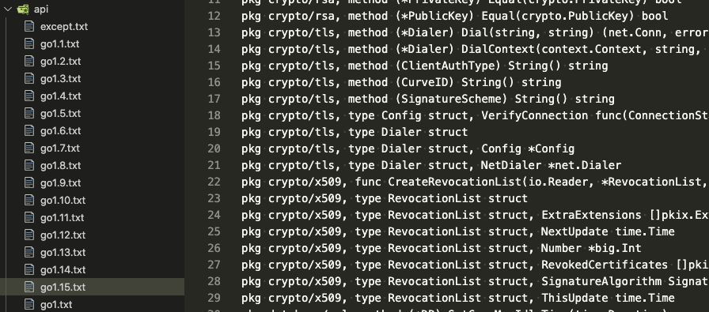

怎么知道某个 API 是在哪个 Go 版本添加的？这个功能如何实现的
大家好，我是站长 polarisxu。
因为 Go 的兼容性做的很好，很多人不太关心 Go 的具体版本。然而有时候可能会涉及到版本的问题，比如你想使用 strings.Builder，Go 版本就必须 >= 1.10，但以下代码在 Go1.10 却编译不通过。
package main
import (
"fmt"
"strings"
)
func main() {
var b strings.Builder
b.WriteString("polarisxu")
fmt.Println(b.Cap())
}
编译会报错：
$ go version
go version go1.10.8 darwin/amd64
$ go run main.go
# command-line-arguments
./main.go:11:15: b.Cap undefined (type strings.Builder has no field or method Cap)
提示 strings.Builder 类型没有 Cap 字段或方法。
所以，你知道标准库中哪个 API 是什么版本引入的吗？或者更实际的是，我当前的版本是否能使用某个 API。
01 常见的两种方式
在 Go 官网有最新稳定版本的标准库文档。从 Go1.11 版本开始，在标准库中，每个类型、函数或方法有加入的版本信息，如果没有，表示 Go1.0 就有了，具体 issue 见：https://github.com/golang/go/issues/5778。但目前常量和变量没有版本信息，具体 issue 见：https://github.com/golang/go/issues/29204。

第二种方法，不是看具体某个 API 对应的版本，而是至少知晓，你当前使用的 Go 版本有没有某个 API，这就是 pkg.go.dev，具体通过这个网站 https://pkg.go.dev/std?tab=versions 选择你对应的版本，然后查找是否有对应的 API。
当然了，你使用 GoLand 之类的编辑器，某个 API 是否有，它会自动提示。
02 标准库显示版本是如何实现的
保持好奇心很重要，这是求知的动力之一。看到官网标准库显示了版本信息，我就想看看它是怎么实现的。
怎么查找实现的代码？
我的第一反应是看标准库注释里有没有写。
// A Builder is used to efficiently build a string using Write methods.
// It minimizes memory copying. The zero value is ready to use.
// Do not copy a non-zero Builder.
type Builder struct {
addr *Builder // of receiver, to detect copies by value
buf []byte
}
没有看到任何版本相关信息。这时你会如何查找？
我的方式是这样的。
1）在页面审查元素，看到 <span title="Added in Go 1.10">1.10</span> 节点。

2）Go 官网源码在这里：https://github.com/golang/website，在该源码中搜索 Added in，找到了 package.html 模板文件。

3）上图中， $since 变量代表了 Go 版本，而它是通过 since 函数得到的： {{$since := since "func" "" .Name $.PDoc.ImportPath}}，很显然这是一个自定义模板函数，因此查找它。website 项目没有找到，因此到 tools
项目去找：因为 godoc 在这个项目中。

通过这个可以找到 sinceVersionFunc 所在文件：versions.go，然后就能找到如下的代码：
// InitVersionInfo parses the $GOROOT/api/go*.txt API definition files to discover
// which API features were added in which Go releases.
func (c *Corpus) InitVersionInfo() {
var err error
c.pkgAPIInfo, err = parsePackageAPIInfo()
if err != nil {
// TODO: consider making this fatal, after the Go 1.11 cycle.
log.Printf("godoc: error parsing API version files: %v", err)
}
}
func parsePackageAPIInfo() (apiVersions, error) {
var apiGlob string
if os.Getenv("GOROOT") == "" {
apiGlob = filepath.Join(build.Default.GOROOT, "api", "go*.txt")
} else {
apiGlob = filepath.Join(os.Getenv("GOROOT"), "api", "go*.txt")
}
files, err := filepath.Glob(apiGlob)
if err != nil {
return nil, err
}
vp := new(versionParser)
for _, f := range files {
if err := vp.parseFile(f); err != nil {
return nil, err
}
}
return vp.res, nil
}
通过以上代码可以看出来版本信息是通过读取 GOROOT 下 api/go*.txt 文件获取的。

api 目录下的这些文件维护了每个版本新增的内容。
最终从这些文件中读取的内容会用以下的类型表示：
// pkgAPIVersions contains information about which version of Go added
// certain package symbols.
//
// Only things added after Go1 are tracked. Version strings are of the
// form "1.1", "1.2", etc.
type pkgAPIVersions struct {
typeSince map[string]string // "Server" -> "1.7"
methodSince map[string]map[string]string // "*Server" ->"Shutdown"->1.8
funcSince map[string]string // "NewServer" -> "1.7"
fieldSince map[string]map[string]string // "ClientTrace" -> "Got1xxResponse" -> "1.11"
}
这里有类型、方法、函数和（类型）字段，但没有变量和常量，这也就是说变量和常量的版本号显示还未实现。
最后，在 website 项目的 main 函数中有这么一句：
// Initialize the version info before readTemplates, which saves
// the map value in a method value.
corpus.InitVersionInfo()
用于初始化版本信息。
03 总结
希望你平时生活、学习和工作过程中，能多一些好奇。本文是一个引子，内容不太重要，过程希望能够对你有所启发。当然，如果你计划学习学习 Go 语言官网的实现，也许本文的帮助会更大。